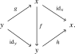

The notions of identity morphisms and composition of morphisms in categories, provided by the Segal axiom, lead to the notion of an isomorphism in a category:
Definition 2.3.1 (Isomorphisms). Consider a morphism \(f\colon x \to y\) in a category \(C\). We say that \(f\) is invertible, or that it is an isomorphism, if there are commutative triangles in \(C\) of the form
An invertible natural transformation is called a natural isomorphism. The Rezk axiom will relate invertible morphisms to the primitive identifications of objects from Definition 1.1.2. We start by defining the category \(\Iso(C)\) of isomorphisms in \(C\).
Definition 2.3.2. Given a category \(C\), we define the category \(\Iso(C)\) via the following pullback diagram:
Explicitly, an absolute object of \(\Iso(C)\) is a commutative diagram in \(C\) of the form

Notice that by definition a morphism \(f \in \Ar(C)\) is invertible in \(C\) if and only if it lifts to an absolute object of \(\Iso(C)\). We may therefore think of the fiber of \(\pi_{\Iso}\) over \(f\) as the category of ‘proofs that \(f\) is invertible’. The following lemma shows that there is at most one such proof:
Lemma 2.3.3. For a category \(C\), the map \(\pi_{\Iso}\colon \Iso(C) \to \Ar(C)\) is an embedding.
Proof
We use the unit and associativity comparisons over prescribed vertices established in Lemma 2.2.6 and Proposition 2.2.7. We need to show that the diagonal \[ \Delta\colon \Iso(C) \to \Iso(C) \times_{\Ar(C)} \Iso(C) \] is an equivalence, or equivalently that the first projection \[ \pr_1\colon \Iso(C) \times_{\Ar(C)} \Iso(C) \to \Iso(C) \] is an equivalence. To this end, consider the two functors \begin{align*} \Ar(C) \times_{\ev_1,C,\ev_0} \Iso(C) &\to \Ar(C) \times_{\ev_1,C,\ev_1} \Iso(C), \qquad (g,f) \mapsto (f \circ g, f) \\ \Iso(C) \times_{\ev_1,C,\ev_0} \Ar(C) &\to \Iso(C) \times_{\ev_0,C,\ev_0} \Ar(C), \qquad (f,h) \mapsto (f,h \circ f). \end{align*} We claim that these functors are equivalences. For the first functor, note that for \(f \in \Iso(C)\) we may functorially extract both a left inverse \(f_l\) with an identification \(f_l \circ f = \id_{s(f)}\) as well as a right inverse \(f_r\) with an identification \(f \circ f_r = \id_{t(f)}\). Using associativity of composition, a left inverse to the first functor is then given by \((g' ,f) \mapsto (f_l \circ g', f)\), while a right inverse is given by \((g',f) \mapsto (f_r \circ g', f)\). One argues similarly for the second functor.
The claim now follows from the observation that the projection \(\pr_1\) is the left vertical map in the following pullback square, where the right vertical map is the fiber product over \(\Iso(C)\) of the two equivalences just constructed, hence an equivalence itself:
As one expects, the identity morphism of any term \(\Gamma\vdash x:C\) is invertible in the same context:
Construction 2.3.4. We construct a functor \(i\colon C \to \Iso(C)\) lifting the functor \(1\colon C \to \Ar(C)\) given by \(x \mapsto \id_x\). Informally, \(i\) sends \(x\) to the following commutative diagram in \(C\): More formally, restriction along the map \(p_{[2]}\colon [2] \to [0]\) induces a functor \(p_{[2]}^*\colon C \to \Triang(C)\), giving a functor \((p_{[2]}^*,p_{[2]}^*)\colon C \to \Triang(C) \times_{\Ar(C)} \Triang(C)\). Since the two relevant edges of this diagram are both the identity on \(x\), this functor factors through \(\Iso(C)\), providing the desired functor \(i\colon C \to \Iso(C)\).
By construction the following diagram commutes:
Axiom F (Rezk axiom). For any category \(C\), the functor \(i\colon C \to \Iso(C)\) is an equivalence.
Together with representability of identifications, the Rezk axiom identifies the anima of identifications between two objects with the category of isomorphisms between them:
Corollary 2.3.5. For every category \(C\) and absolute objects \(x,y\) of \(C\), there is an equivalence \[ (x=y)\simeq *\times_{C\times C}\Iso(C), \] where the maps defining the fiber product are \((x,y)\colon *\to C\times C\) and \((\ev_0,\ev_1)\colon\Iso(C)\to C\times C\).
Proof
By Axiom B.7, the anima \((x=y)\) is the pullback of \(x,y\colon *\to C\). Applying Lemma 1.6.13, we obtain a pullback square The Rezk axiom identifies \(C\) with \(\Iso(C)\) through the equivalence \(i\), and \((\ev_0,\ev_1)i=\Delta\). Replacing \(C\) by \(\Iso(C)\) therefore identifies this pullback with the required fiber.
Corollary 2.3.6. For functors \(f,g\colon C\to D\), there is an equivalence \[ (f=g)\simeq *\times_{\Fun(C,D)\times\Fun(C,D)}\Iso(\Fun(C,D)), \] where the maps defining the fiber product are \((f,g)\) and \((\ev_0,\ev_1)\). Thus identifications of functors are equivalently natural isomorphisms of functors.
Proof
By Definition 1.7.3, currying identifies the anima \((f=g)\) with the anima of identifications between the corresponding absolute objects of \(\Fun(C,D)\). Applying Corollary 2.3.5 to these objects gives the asserted equivalence.
Corollary 2.3.7. For a category \(C\), the functor \(p_{[1]}^*\colon C \to \Ar(C)\) is an embedding.
Proof
This functor factors as \(C \xrightarrow{i} \Iso(C) \xrightarrow{\pi_{\Iso}} \Ar(C)\). The first functor is an equivalence by the Rezk axiom, while the second one is an embedding by Lemma 2.3.3. The claim follows.